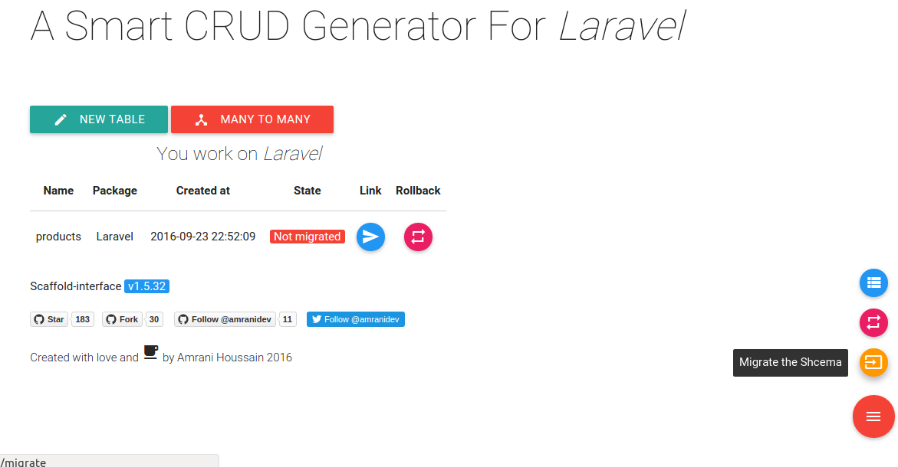

Usage
make sure that you have installed scaffold-interface correctly
Scaffold interface provides a simple way to create crud, models/views/constroller and relationships as OneToMany/ManyToMany.
Scaffold-interface is definitely quite simple, all you have to do is click here and there to get it done.
Let's begin.
- Go to
http://{your-project-url}/scaffold.

- Click on new table and fill the form, then click on ready and done button.

- MVC files has been generated.

- Migrate your schema to the database by clicking on the Migrate button.

Well, your model is ready to use.
To delete your entity just rollback its table from database clicking on rollback button first, then click on delete button to be deleted form your app.